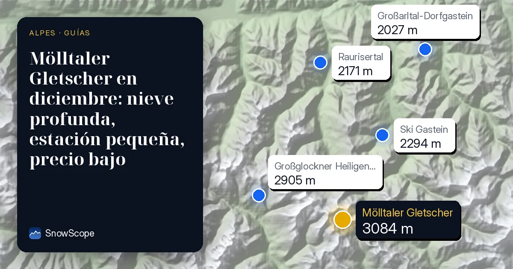

Mölltaler Gletscher en diciembre: nieve profunda, estación pequeña, precio bajo
Primero la pega: el Mölltaler Gletscher es pequeño, con 21 km de pistas cartografiadas y 9 remontes, y desde el valle del Möll la subida es larga. Todo lo demás juega a favor: su remonte más bajo está a 2103 m, donde un 15 de diciembre típico tiene 66 cm en nuestros 46 inviernos de histórico, y la temporada baja publicada dura hasta Nochebuena.
Consulta la previsión de nieve en tiempo real de Mölltaler Gletscher en la app SnowScopeEspesor de nieve, alertas de nieve polvo y mapa 3D, gratis.
La pega
Aquí no se viene por la variedad. Nueve remontes y 21 km de pistas llenan dos o tres días a un buen esquiador, no una semana. Y el glaciar está al fondo de un valle tranquilo de Carintia: hace falta coche o el transporte de la estación, y las noches son tranquilas.
La otra pega es de información: cuando lo comprobamos, la página oficial de precios aún mostraba la tarifa 2025-26. Los precios de este invierno pueden moverse un poco.


Por qué funciona igualmente
Por la altura. La estación empieza a 2103 m y sube hasta 3084 m. En diciembre eso significa esquiar sobre una capa completa desde el primer remonte. La semana del 15 al 21 de diciembre, el 91 % de nuestros inviernos tenía 30 cm o más abajo, y el 100 % a media montaña (2593 m).
También es de los pocos sitios donde la semana de Navidad es casi segura para nieve profunda: en el 98 % de nuestros inviernos la media montaña tenía 60 cm o más la semana del 22 al 28 de diciembre.
La nieve, fecha a fecha
Espesor típico en el remonte más bajo: 50 cm el 1 de diciembre, 66 cm el 15, 74 cm el 24. A media montaña: 93, 128 y 129 cm. Incluso un año flojo (1 invierno de cada 10) conserva 28 cm abajo el 15 de diciembre, y en ninguno de los 46 inviernos el suelo estaba pelado allí ese día.
El largo plazo es menos cómodo: la media de diciembre a media montaña bajó de 117 cm en los primeros 15 inviernos a 92 cm en los últimos 15. El invierno pasado había 58 cm el 15 de diciembre. Mucha nieve, pero bastante por debajo de la normal de antes.
Lo que cuesta
Según la tarifa oficial (2025-26, la última publicada), el forfait de día adulto cuesta 69 EUR en temporada baja, hasta el 24 de diciembre, y 72 EUR en temporada alta. El de 6 días cuesta 332 EUR en temporada baja y 376 EUR en alta.
Una semana que termina antes de Nochebuena paga el precio bajo, en una montaña con nieve segura justo esa semana.
Comparado con el Kitzsteinhorn
El Kitzsteinhorn, sobre Kaprun, es el glaciar más conocido al otro lado de los Hohe Tauern. Su forfait de 6 días cuesta 396 EUR en temporada temprana y 440 EUR en temporada alta. Arriba tiene mucha nieve (137 cm un 15 de diciembre típico), pero su media montaña a 1894 m tiene 40 cm y su base a 765 m solo 6 cm.
El Mölltaler Gletscher es más barato y tiene más nieve en todas las alturas que de verdad se esquían en diciembre. A cambio renuncias a tamaño, après-ski y traslados cortos.
Consejos para esquiadores
- Para una semana entera, combínalo: tres días en el glaciar y el resto en otra estación de Carintia.
- Quédate en temporada baja (hasta el 24 de diciembre): 332 EUR en vez de 376 EUR por 6 días.
- Antes de pagar, mira la tarifa de este invierno en la web oficial: la publicada aún era la de la temporada pasada.
- El fuera de pista en glaciar esconde grietas: solo con guía y tras leer el boletín de aludes de Carintia.
Más mapas (sitios externos)
Referencias y créditos
- Mölltaler Gletscher: official lift-pass prices (2025-26), checked 13 November 2026 www.moelltaler-gletscher.at/en/price-list/winter/moelltaler-gletscher
- Kitzsteinhorn (Kaprun): official lift-pass prices (2026-27), checked 13 November 2026 www.kitzsteinhorn.at/en/tickets-prices/ski-board
Sobre estas cifras
Cifras de nieve: histórico de nieve de SnowScope, 46 inviernos pasados (1980-81 a 2025-26) a las alturas de la estación, corregido por altitud (una estimación para una zona, no partes de la estación); «buena nieve» = 30 cm o más en el suelo de media en la semana. Mapa: nuestro espesor habitual el 15 de diciembre repartido sobre el relieve según la altura. Pistas y remontes: cartografía OpenSkiMap. Forfaits: tarifas oficiales de las estaciones, comprobadas el 13 de noviembre de 2026; los precios pueden cambiar.
Boletines oficiales de aludes: Lawinenwarndienst Kärnten
Citar este informe
Para investigación, docencia o prensa: cifras y gráficos reutilizables libremente bajo CC BY 4.0 con esta cita.
SnowScope (2026), Mölltaler Gletscher en diciembre: nieve profunda, estación pequeña, precio bajo, https://snowscope.app/blog/es/2026/11/moelltaler-gletscher-december-skiing-carinthia-low-cost.html, consultado el 2026-11-14
SnowScope (Atlas Labs). (2026, November 14). Mölltaler Gletscher en diciembre: nieve profunda, estación pequeña, precio bajo. SnowScope snow reports. https://snowscope.app/blog/es/2026/11/moelltaler-gletscher-december-skiing-carinthia-low-cost.html
BibTeX
@misc{snowscope2026moelltalergletscherdecem,
author = {{SnowScope (Atlas Labs)}},
title = {Mölltaler Gletscher en diciembre: nieve profunda, estación pequeña, precio bajo},
year = {2026},
month = nov,
howpublished = {\url{https://snowscope.app/blog/es/2026/11/moelltaler-gletscher-december-skiing-carinthia-low-cost.html}},
note = {Published 2026-11-14 13:14 UTC; accessed 2026-11-14}
}· CC BY 4.0 · Métodos, datos y herramientas →
Sigue Mölltaler Gletscher
Gratis: un aviso cuando llega la nieve y la previsión cada mañana.